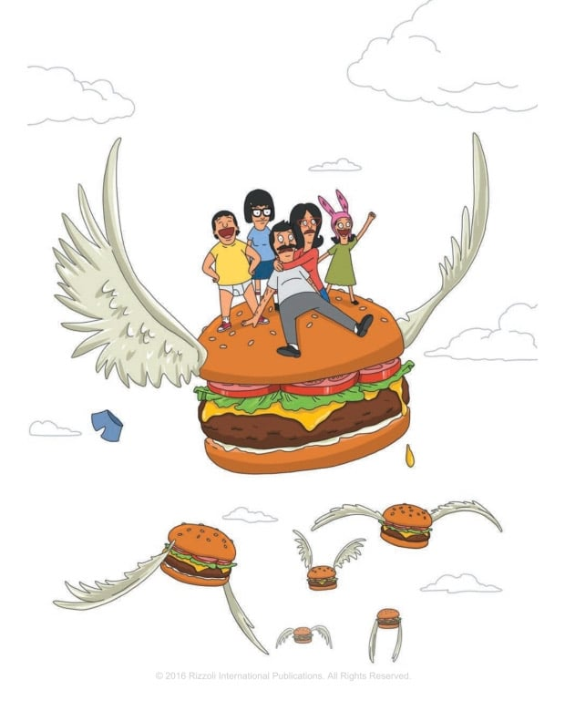

Poutine on Ritz from Bob's burgers

Bob's Burger is filled with many appetizing treats with clever pun names.
If you are looking for something filled with gravy and fries, then this recipe is for you!
Ingredients
- 1 ounce dried porcini mushrooms
- 3 tablespoons unsalted butter
- 3 tablespoons all-purpose flour
- 1 tablespoon olive oil
- ½ medium onion, sliced
- ½ medium shallot, sliced
- ½ medium leek, white and pale-green parts only, sliced
- 1 garlic clove, smashed
- 2 teaspoons tomato paste
- 2 cups veal demi-glace or homemade veal stock
- 2 teaspoons black peppercorns
- 1 teaspoon apple cider vinegar
- 1 teaspoon green peppercorns
- 1 teaspoon Worchestershire sauce
- 2 sprigs parsley
- 2 sprigs thyme
- 1 bay leaf
- 1 pound frozen, wide-cut steak fries, fried as directed
- Unsalted butter, room temperature (for buns)
- 4 sesame seed buns, split
- Vegetable oil for pan
- 1½ pounds ground beef chuck (20% fat)
- Kosher salt, freshly ground pepper
- Mayonnaise, dill pickle slices, cheddar cheese curds or halloumi, and chopped chives for serving
Steps
- Cover the mushrooms with boiling water in a small bowl, and let them sit until they're tender. Strain the mushrooms and save the soaking liquid.
- Melt the butter over medium-high heat. Add the flour and cook until the mixture is deep golden brown and smells nutty (about 2-4 minutes). Set this mixture aside.
- Heat the oil in a medium saucepan over medium-high heat. Add the onions, shallots, leeks, and garlic and stir until they're caramelized (about 10-12 minutes). Add the tomato paste and cook for another minute or two. Add the mushrooms and their soaking liquid, demi-glace, black and green peppercorns, vinegar, Worchestershire, parsley, thyme, and bay leaf. Bring the mixture to a boil, then reduce the heat and simmer for about 30 minutes. Strain this stock into a large bowl and toss the solids.
- Put the stock back in a suacepan and bring to a boil. Whisk in the flour mixture (roux) from earlier and stir until the gravy is thick and smooth (about 2-3 minutes). Butter and toast the buns in a large griddle or cast-iron skillet.
- Heat the griddle or skillet until very hot and lightly brush it with oil. Divide the beef into 4 equal portions (not patties), and transfer each to the griddle. Smash them to form imperfect patties. Season with salt and pepper and cook until they're browned around the edges (about 2 minutes). Turn and repeat on the other side.
- Transfer each patty to a bun, and garnish as desired with toppings and the gravy. Just don't forget the fries!